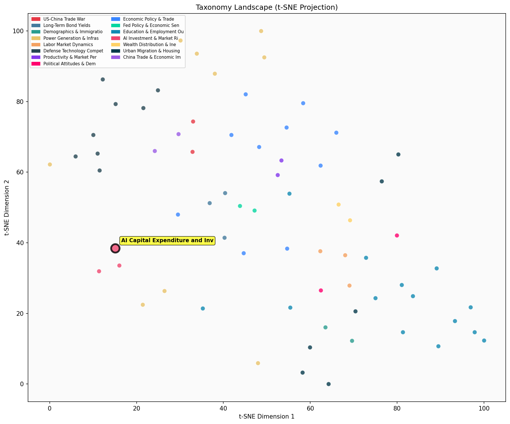

Description
This subcluster examines the unprecedented surge in AI-related capital expenditure and its market implications. Articles analyze massive debt issuances by hyperscalers, with major financial institutions like Morgan Stanley, Barclays, and JPM providing quantitative assessments of AI investment's economic impact. The coverage spans credit default swap markets, GDP growth attribution, and corporate financing strategies. Data sources include DTCC market data, OECD economic estimates, and investment bank research. Articles typically feature financial analysis of how AI spending drives broader economic indicators, with some examining the sustainability of current investment levels and return expectations. The subcluster captures both optimistic growth projections and emerging concerns about debt-fueled AI expansion.
Similarity to All 70 Subclusters
Each cell represents a subcluster. Color intensity shows similarity (blue=low, red=high). Black line marks current subcluster position.

Relationship to Primary Clusters
Average similarity to each of the 15 primary clusters. Larger area = stronger relationship to that cluster.
Taxonomy Landscape
All 70 subclusters positioned by similarity (t-SNE). Current subcluster highlighted with label. Click to enlarge.
Network Connections
Current subcluster at center, connected to related subclusters. Line thickness = similarity strength.
Most Representative Articles
-
1. Morgan Stanley shows AI-related cap-ex growth exceeds total non-residential fixed investment growth
-
2. As AI-related real private fixed investment has surged, non-AI-related investment’s contribution to
-
3. Meta and Microsoft 2025 capex is approaching 40% of revenue. MS estimates there is a $1.5T gap btw t
-
4. US AI-related capex was ~ $100B in 2023, about 0.4% of GDP. Bridgewater forecasts an investment arms
-
5. The four major “hyperscalers” continue to have a large gap btw AI spending ($440B in 2024 and $596B
Edge Cases (Boundary Articles)
-
1. A @WSJ interview with Jensen Huang, founder of @Nvidia, highlights why motivating properly trained tThis article is borderline because while it mentions Nvidia's founder discussing entrepreneurship and risk-taking, it focuses on talent management and business philosophy rather than actual capital expenditure, debt issuances, or investment flows that define the AI CapEx cluster. The content is more about leadership insights than the financial metrics and spending patterns that characterize AI investment surges.
-
2. Macron warns that new EU AI regulations will significantly harm Europe. "We can decide to regulate mThis article is borderline because while it touches on AI market implications (through regulatory impact on European competitiveness), it focuses on policy and regulation rather than the financial metrics, capital expenditures, and investment flows that define this cluster. The content about regulatory warnings and competitive positioning has much stronger thematic alignment with discussions about AI development challenges and market dynamics found in the "AI Performance Plateaus and Diminishing Returns" cluster.
-
3. Meta is spending $9B on 350,000 NvidiaH100 GPUs and buying another 250,000 H100 equivalents this yeaThis article is borderline because while it mentions AI-driven capex, it focuses primarily on the specific hardware procurement (Nvidia GPUs) rather than the broader financial and investment patterns that characterize the cluster's emphasis on debt issuances and market implications. The content is more hardware-centric than finance-centric, making it potentially better suited for a semiconductor-focused cluster despite the capex angle.
Original Dendrogram